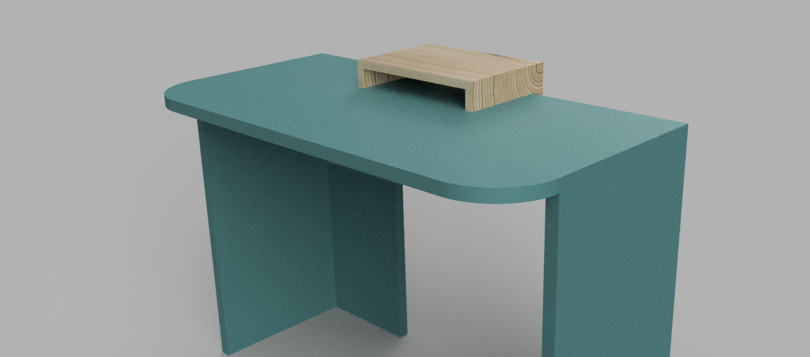
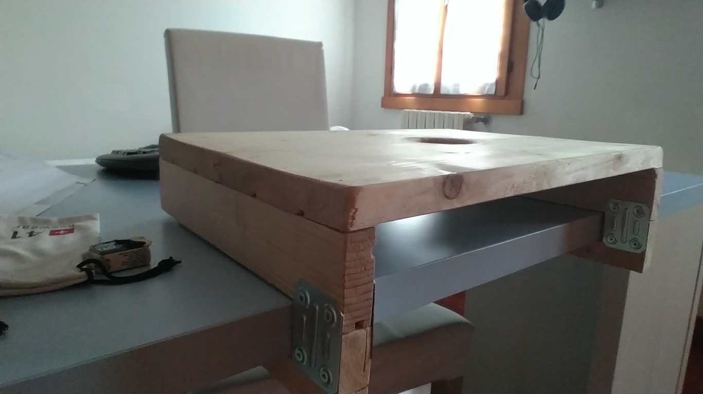

Design of a lightweight laptop positioner
Topology-optimized laptop positioner for improved ergonomics.
1. Problem statement and Goals
I originally used a custom-made raised platform on my desk (see Figure 1) to elevate my laptop. This setup allowed me to use an iPad alongside the laptop for note-taking, or pair the laptop with an external keyboard and mouse to reduce eye-level strain.
However, when using the laptop on its own, several critical ergonomic issues emerged:
- Poor visibility due to distance: The screen was too far away, forcing the user to lean forward and adopt poor posture.
- Insufficient height: The display remained below eye level, causing severe neck tilt and slouching.
- Inefficient workflow: Manually moving the laptop off the platform onto the desk improved readability slightly, but degraded ergonomics even further while being tedious and inefficient.


Goals to achieve are:
- Design the mechanism responsible for adjusting the laptop’s position.
- Analyze load distributions and apply appropriate factors of safety.
- Perform topology optimization of the 3D printed parts for a material-efficient design.
- Conduct approximate fatigue calculations to estimate component lifespan.
2. Design
- ...
3. Results
...
- ...
...